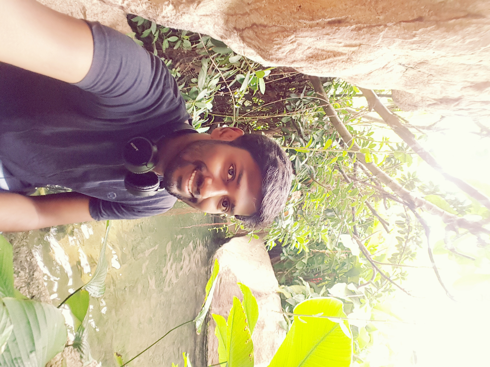

I am Vignesh, a Lead Software Engineer with a BE in Electrical and Electronics Engineering and over 12 years of experience in the banking and financial services domain. My expertise lies in production support, application development, and handling critical systems with high reliability. I have a strong focus on troubleshooting, performance optimization, and delivering stable, scalable solutions.
I began my career at HCL Technologies, where I worked for 4.7 years as a Production Support Engineer supporting the Misys Summit application. During this time, I developed strong expertise in batch monitoring and scheduling using Control-M, along with hands-on experience in tools such as Geneos, Shell scripting, SQL, and PL/SQL.
I also had the opportunity to work onsite with Deutsche Bank in Singapore for one year , gaining valuable exposure to global banking systems and direct client interactions.
I am currently working at Societe Generale as a Lead Software Engineer, contributing for over 8 years.
I work on a Data Distribution application that ingests data from multiple upstream systems, processes and transforms it, and delivers it to various downstream consumers in the required formats.
I also had the opportunity to work onsite in Paris, France, where I played a key role in transitioning the application and its support activities from the onsite team to India. This experience enhanced my exposure to international client collaboration, knowledge transfer, and managing critical production systems in a global environment.
I aim to continuously upskill and evolve as a Full Stack Developer, contributing to the design and development of scalable, high-performance, and reliable applications in the IT industry.